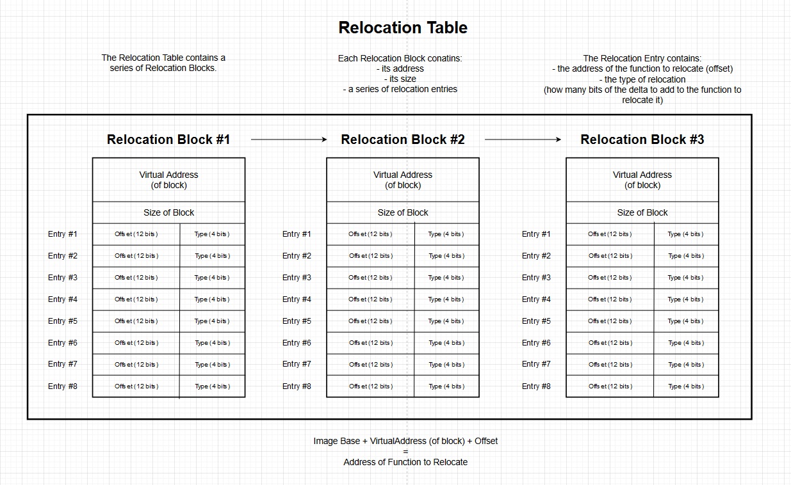

# Base Relocations
Base relocations can be a pain.
•
https://reverseengineering.stackexchange.com/questions/15080/how-reloc-section-is-used-in-pe-file - good explanation
•
https://stackoverflow.com/questions/17436668/how-are-pe-base-relocations-build-up - sample code
•
https://www.unknowncheats.me/forum/c-and-c-/231635-image-relocation.html - 32bit sample code
•
https://github.com/huangqiheng/andpack/blob/6c53f92b7bf949723c99a35465e3f75b0a98bda9/msghooker/dll_loader.c#L212 - sample code
•
https://github.com/Zer0Mem0ry/ManualMap/blob/master/ManualInjector/ManualInjector.cpp - sample code
•
https://web.archive.org/web/20141105094409/http://gate.upm.ro/os/LABs/Windows_OS_Internals_Curriculum_Resource_Kit-ACADEMIC/WindowsResearchKernel-WRK/WRK-v1.2/base/ntos/rtl/ldrreloc.c - windows internal file? about relocs
•
https://medium.com/@cyjien/pe-injection-trick-d044977f4791 - potential tutorial
• check hasherezade's PE Bear source code on github
• A
RebaseMappedImage function can be found in the leaked Windows XP source code:
◇ in
NT\base\mspatch\api\pestuff.c line 415
•
https://github.com/polycone/pe-loader/blob/1f7b8b4913af44fe9619cec6979a7ea3b8772631/loader/src/loader/relocations.cpp#L45 - Base relocations from PE loader
Base Relocations are stored in the
.reloc section.
Chapter 6.6 in the PE specification:
http://www.skyfree.org/linux/references/coff.pdfTipCan use
ImageDirectoryEntryToData to grab the relocation directory
https://docs.microsoft.com/en-us/windows/win32/api/dbghelp/nf-dbghelp-imagedirectoryentrytodataUse FALSE for Raw Address, TRUE for Virtual Address.
Inspiration from here (search for
RtlImageDirectoryToData function):
https://web.archive.org/web/20141105094409/http://gate.upm.ro/os/LABs/Windows_OS_Internals_Curriculum_Resource_Kit-ACADEMIC/WindowsResearchKernel-WRK/WRK-v1.2/base/ntos/rtl/ldrreloc.c## Why base relocations?
Base Relocations exist for when a PE can't be loaded at its preferred base address.
e.g.
• A 32bit PE prefers to be loaded at
0x00400000• Therefore, its functions will exist near this range e.g.
0x00401ca0 0x0040f632 etc.
When this PE can't be loaded at
0x00400000, its functions:
0x00401ca0 0x0040f632 need to be relocated to the new base address where the PE is loaded
e.g.
• The PE is loaded at
0x00600000 (instead of
0x00400000)
• The difference between the 2 base addresses - the delta - is
0x00200000• Therefore, the PE's functions can be relocated by adding the delta -
0x00200000 - to the original value
◇
0x00401ca0 +
0x00200000 = function is relocated to
0x00601ca0 ◇
0x0040f632 +
0x00200000 = function is relocated to
0x0060f632 ◇ etc.
## The Base Relocation Table - what it looks like
The Base Relocation Table looks like this:
The relocation table contains a series of blocks.
Each block contains:
•
VirtualAddress - an RVA from the image base. image base + this VirtualAddress + offset (below) is location of the address that needs to be fixed
•
SizeOfBlock - indicates the size of the block
Within the block, immediately following the
SizeOfBlock value, will be a number of 16bit values.
These 16 bit values are relocation entries.
Each relocation entry contains:
• the
offset at where to perform the relocation
• the
type of relocation to perform
• The
offset is stored in the first 12 bits of the entry
• The
type is stored in the last 4 bits of the entry
### Relocation Type
The relocation type describes how many bits of the delta to add to the function address to relocate it.
https://docs.microsoft.com/en-us/windows/win32/debug/pe-format#base-relocation-typesHere are the common ones:
•
IMAGE_REL_BASED_ABSOLUTE - the address is absolute / points directly. no relocation needed.
•
IMAGE_REL_BASED_HIGH - add the high 16 bits of the delta to the high 16 bits of the 32bits @ relocation offset
•
IMAGE_REL_BASED_LOW - add the low 16 bits of the delta to the low 16 bits of the 32bits @ relocation offset
•
IMAGE_REL_BASED_HIGHLOW - add the entire delta (32bit value) to the 32bits @ relocation offset - common in 32 bit PEs
•
IMAGE_REL_BASED_DIR64 - add the entire delta to the 64bits @ relocation offset - common in 64bit PEs
### Relocation Offset
The:
image_base + reloc_block->VirtualAddress + reloc_entry->Offsetis the address which stores a pointer to function to relocate.
e.g.
image_base + reloc_block->VirtualAddress + reloc_entry->Offset = 0x70562234Memory address
0x70562234 stores the value
0x00401ca00x00401ca0 is what we need to add to our delta to relocate the function.
## Looping through the Relocation Table
This is more difficult than it should be because the base relocation Blocks and Entries aren't stored in structs.
You calculate their sizes and move through them yourself.
It's been made clear in the example code.
## Code
### About the confusing typecasts at line 138 onwards
reloc_addr points to the address of the relocation.
At
reloc_addr there might the the value
0x00421507.
In memory, because x86 is little endian, the value will look like this:
07 15 42 00In the number
0x00421507,
• the high order / most significant 16 bits are
00 42• the low order / least significant 16 bits are
15 07Because of the little endian storage seen above, you can see these are reversed.
The low order bytes -
07 15 - are first
and the high order bytes -
00 42 - are last.
Therefore, to grab the high order bytes we need to read at address
reloc_addr + 0x2.
*(WORD*)((size_t)reloc_addr + 0x2)•
(size_t)reloc_addr + 0x2 - calculate reloc_addr + 2
•
(WORD*)() - typecast value @ (reloc_addr + 2) as a pointer to a WORD (pointer to 16 bits)
•
* - grab data pointed to WORD pointer
(NOTE: on x64 it should actually be
reloc_addr + 0x4 to grab the higher 16 bytes)
And to grab the low order bytes we can simply grab the first 2 bytes at
reloc_addr.
*(WORD*)reloc_addr•
(WORD*)reloc_addr - typescasts reloc_addr as a pointer to a WORD (pointer to 16 bits)
•
* - grab data pointed to by WORD pointer
### Code
/*
Peform some base relocations.
USES RAW ADDRESSES. DO CHANGE IF USING A MEMORY MAPPED PE.
target_base IN MAIN IS FOR 64BIT PEs. MODIFY IF WORKING WITH 32BIT PE.
*/
#include <stdio.h>
#include <Windows.h>
typedef struct BASE_RELOCATION_ENTRY
{
USHORT Offset : 12;
USHORT Type : 4;
} BASE_RELOCATION_ENTRY, * PBASE_RELOCATION_ENTRY;
LPVOID ReadFileIntoBuffer(char* file_name, OUT DWORD* file_buffer_size)
{
LPVOID file_buffer = NULL;
BOOL b_ret = TRUE;
HANDLE h_file = NULL;
DWORD file_size = 0;
// open target file
h_file = CreateFileA(file_name, GENERIC_READ | GENERIC_WRITE, 0, NULL, OPEN_EXISTING, FILE_ATTRIBUTE_NORMAL, NULL);
if (h_file == INVALID_HANDLE_VALUE)
{
printf("[-] failed to open target file: %d \n", GetLastError());
goto cleanup;
}
// get file size
file_size = GetFileSize(h_file, NULL);
(*file_buffer_size) = file_size;
// create buffer to read file into
file_buffer = malloc(file_size);
// read file into buffer
b_ret = ReadFile(h_file, file_buffer, file_size, NULL, NULL);
if (b_ret == FALSE)
{
printf("[-] failed to read file into buffer: %d \n", GetLastError());
free(file_buffer);
goto cleanup;
}
cleanup:
if (h_file) CloseHandle(h_file);
return file_buffer;
}
/*
Convert VirtualAddress (address in memory) to raw address (address on disk).
Does so by finding which PE section your VirtualAddress is in,
subtracting the section's start address to find the relative virtual address,
and then adding the RVA to the start of the section on disk.
*/
DWORD va2raw(LPVOID file_buffer, DWORD va)
{
DWORD rva = 0;
DWORD raw_address = 0;
PIMAGE_DOS_HEADER dos_header = (PIMAGE_DOS_HEADER)file_buffer;
PIMAGE_NT_HEADERS pe_header = (PIMAGE_NT_HEADERS)((DWORD_PTR)file_buffer + dos_header->e_lfanew);
PIMAGE_SECTION_HEADER section_header = IMAGE_FIRST_SECTION(pe_header);
if (va < section_header->PointerToRawData)
return va;
for (int i = 0; i < pe_header->FileHeader.NumberOfSections; i++)
{
DWORD section_start = section_header->VirtualAddress;
DWORD section_end = section_header->VirtualAddress + section_header->SizeOfRawData;
// If the provided VA is within the bounds of this current section
if (va >= section_start && va < section_end)
{
rva = va - section_start;
raw_address = section_header->PointerToRawData + rva;
break;
}
section_header += 1;
}
return raw_address;
}
/*
Loop through relocation table and perform base relocations.
Uses raw addresses!
If statements are used to make the code position independent
(using a switch statement assembles to jmp instructions, which
prevents the code from being position independent)
*/
BOOL RelocatePE(LPVOID pe_buffer, LPVOID new_base)
{
BOOL ok = TRUE;
PIMAGE_DOS_HEADER dos_header = (PIMAGE_DOS_HEADER)pe_buffer;
PIMAGE_NT_HEADERS pe_header = (PIMAGE_NT_HEADERS)((SIZE_T)dos_header + (SIZE_T)dos_header->e_lfanew);
PIMAGE_BASE_RELOCATION reloc_table = (PIMAGE_BASE_RELOCATION)((size_t)pe_buffer + va2raw(pe_buffer, pe_header->OptionalHeader.DataDirectory[IMAGE_DIRECTORY_ENTRY_BASERELOC].VirtualAddress));
PIMAGE_BASE_RELOCATION reloc_block = reloc_table;
DWORD table_size = pe_header->OptionalHeader.DataDirectory[IMAGE_DIRECTORY_ENTRY_BASERELOC].Size;
size_t delta = (size_t)new_base - (size_t)pe_header->OptionalHeader.ImageBase;
if (delta == 0)
return ok;
printf("[*] original base: 0x%p \n", (void*)pe_header->OptionalHeader.ImageBase);
printf("[*] target base: 0x%p \n", new_base);
printf("[*] delta: 0x%p \n\n", (void*)delta);
DWORD block_number = 1;
DWORD entries_in_block = 0;
DWORD table_position = 0;
PBASE_RELOCATION_ENTRY reloc_entry = NULL;
// Loop through blocks in relocation table
while (table_position < table_size)
{
entries_in_block = (reloc_block->SizeOfBlock - sizeof(IMAGE_BASE_RELOCATION)) / sizeof(WORD);
reloc_entry = (PBASE_RELOCATION_ENTRY)(reloc_block + 1);
printf("\nBLOCK #%d \n", block_number);
printf("size: 0x%x \t entries: %d \n\n", reloc_block->SizeOfBlock, entries_in_block);
for (DWORD i = 0; i < entries_in_block; i++)
{
void* reloc_addr = (void*)((size_t)pe_buffer + va2raw(pe_buffer, reloc_block->VirtualAddress) + reloc_entry->Offset);
printf("reloc #%d \t [reloc_addr] 0x%p ", i, reloc_addr);
if (reloc_entry->Type == IMAGE_REL_BASED_ABSOLUTE)
{
printf("\t [type] ABSOLUTE (no relocation needed) \n");
}
else if (reloc_entry->Type == IMAGE_REL_BASED_HIGH)
{
printf("\t [type] HIGH \t [value] 0x%x ", HIWORD(*(DWORD*)reloc_addr));
*(WORD*)((size_t)reloc_addr + 0x2) += HIWORD(delta); // add higher 16 bits of delta to higher 16 bits at relocation address
printf("\t [modified] 0x%x \n", *(DWORD*)reloc_addr);
}
else if (reloc_entry->Type == IMAGE_REL_BASED_LOW)
{
printf("\t [type] LOW \t [value] 0x%x ", LOWORD(*(DWORD*)reloc_addr));
*(WORD*)reloc_addr += LOWORD(delta); // add lower 16 bits of delta to lower 16 bits at relocation address
printf("\t [modified] 0x%x \n", *(DWORD*)reloc_addr);
}
else if (reloc_entry->Type == IMAGE_REL_BASED_HIGHLOW)
{
printf("\t [type] HIGHLOW \t [value] 0x%x ", *(DWORD*)reloc_addr);
*(DWORD*)reloc_addr += delta; // add all 32bits of delta to the 32bits at relocation address
printf("\t [modified] 0x%x \n", *(DWORD*)reloc_addr);
}
else if (reloc_entry->Type == IMAGE_REL_BASED_DIR64)
{
printf("\t [type] DIR64 \t [value] 0x%x ", *(DWORD*)reloc_addr);
*(DWORD64*)reloc_addr += delta; // add all 64bits of delta to the 64bits at relocation address
printf("\t [modified] 0x%llx \n", *(DWORD64*)reloc_addr);
}
reloc_entry += 1;
}
// Advance to next block
block_number++;
table_position += reloc_block->SizeOfBlock;
reloc_block = (PIMAGE_BASE_RELOCATION)((size_t)reloc_block + reloc_block->SizeOfBlock);
}
return ok;
}
int main(int argc, char* argv[])
{
printf("# relocate PE \n\n");
// arguments setup
if (argc != 2)
{
printf("[-] 1 argument required :/ \n");
return EXIT_FAILURE;
}
char* arg1_filename = argv[1];
// main
LPVOID file_buffer = NULL;
DWORD file_size = 0;
file_buffer = ReadFileIntoBuffer(arg1_filename, &file_size);
if (file_buffer == NULL)
{
printf("[-] failed to read file into buffer: %d \n", GetLastError());
return EXIT_FAILURE;
}
printf("[*] target: %s \n", arg1_filename);
printf("[+] PE file loaded @ 0x%p \n\n", file_buffer);
LPVOID target_base = NULL;
#ifdef _WIN64
target_base = (LPVOID)0x0000000360000000;
#else
target_base = (LPVOID)0x00360000;
#endif
RelocatePE(file_buffer, target_base);
free(file_buffer);
return 0;
}